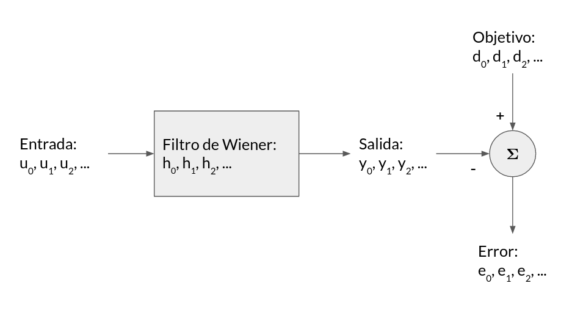

import holoviews as hv
hv.extension('bokeh')
hv.opts.defaults(hv.opts.Curve(width=500),
hv.opts.Points(width=500),
hv.opts.Image(width=500, colorbar=True, cmap='Viridis'))
import numpy as np
import scipy.linalg
import scipy.signal
import scipy.fft
10. Estimador lineal óptimo¶
Un estimador es un sistema diseñado para extraer información a partir de una señal
La señal contiene información y ruido
La señal es representada como una secuencia de datos
Tipos de estimador
Filtro: Estimo el valor actual de mi señal acentuando o eliminando una o más características
Predictor: Estimo el valor futuro de mi señal
En esta lección estudiaremos estimadores lineales y óptimos
Lineal: La cantidad estimada es una función lineal de la entrada
Óptimo: El estimador es la mejor solución posible de acuerdo a un criterio
Para entender los fundamentos de los estimadores óptimos es necesario introducir el concepto de proceso aleatorio. Luego estudiaremos uno de los estimadores óptimos más importantes: El filtro de Wiener
10.1. Proceso aleatorio o proceso estocástico¶
Un proceso estocástico es una colección de variables aleatorias indexadas tal que forman una secuencia. Se denotan matemáticamente como un conjunto \(\{U_k\}\), con \(k=0, 1, 2, \ldots, N\). El índice \(k\) puede representar tiempo, espacio u otra variable independiente.
La siguiente figura muestra tres realizaciones u observaciones de un proceso estocástico con cuatro elementos

Existen muchos fenómenos cuya evolución se modela utilizando procesos aleatorios. Por ejemplo
Los índices bursatiles
El comportamineto de un gas dentro de un contenedor
Las vibraciones de un motor eléctrico
El área de una célula durante un proceso de organogénesis
A continuación revisaremos algunas de las propiedades de los procesos aleatorios
Momentos de un proceso estocástico
Un proceso aleatorio \(U_n = (u_n, u_{n-1}, u_{n-2}, \ldots, u_{n-L})\) se describe a través de sus momentos estadísticos. Si consideramos una caracterízación de segundo orden necesitamos definir
Momento central o media: Describe el valor central del proceso
Segundo momento o correlación: Describe la dispersión de un proceso
Segundo momento centrado o covarianza
Correlación cruzada entre dos procesos
Proceso estacionario y ergódico
En esta lección nos vamos a centrar en el caso simplificado donde el proceso es estacionario, matemáticamente esta propiedad significa que
y
es decir que los momentos estadísticos se mantienen constantes en el tiempo (no depende de \(n\)).
Otra simplificación que utilizaremos es que el proceso sea ergódico,
es decir que podemos reemplazar el valor esperado por la media muestral en el tiempo
Densidad espectral de potencia
La densidad espectral de potencia o power spectral density (PSD) mide la distribución en frecuencia de la potencia del proceso estocástico. Su definición matemática es
que corresponde a la transformada de Fourier de la correlación (caso estacionario)
La PSD y la correlación forman un par de Fourier, es decir que uno es la transformada de Fourier del otro.
10.2. Filtro de Wiener¶
El filtro de Wiener fue publicado por Norbert Wiener en 1949 y es tal vez el ejemplo más famoso de un estimador lineal óptimo.
Importante
Para diseñar un estimador óptimo necesitamos un criterio y condiciones (supuestos). Luego el estimador será óptimo según dicho criterio y bajo los supuestos considerados. Por ejemplo podríamos suponer un escenario donde el ruido es blanco o donde el proceso es estacionario.
A continuación describiremos en detalle este filtro y explicaremos como se optimiza. Luego se veran ejemplos de aplicaciones.
10.2.1. Notación y arquitectura del filtro de Wiener¶
El filtro de Wiener es un sistema de tiempo discreto con estructura FIR y \(L+1\) coeficientes. A continuación se muestra un esquema del filtro de Wiener
{kind=link}
Del esquema podemos reconocer los elementos más importantes de este filtro
Los coeficientes del filtro: \(h_0, h_1, h_2, \ldots, h_{L}\)
La señal de entrada al filtro: \(u_0, u_1, u_2, \ldots\)
La señal de salida del filtro: \(y_0, y_1, y_2, \ldots\)
La señal de respuesta “deseada” u objetivo: \(d_0, d_1, d_2, \ldots\)
La señal de error: \(e_0, e_1, e_2, \ldots\)
Al ser un filtro FIR la salida del filtro está definida como
es decir la convolución entre la entrada y los coeficientes. Luego la señal de error es
que corresponde a la diferencia entre la señal objetivo y la señal de salida.
A continuación veremos que se ajustan los coeficientes del filtro en base al criterio de optimalidad.
10.2.2. Ajuste del filtro de Wiener¶
El criterio más común para aprender o adaptar el filtro de Wiener es el error medio cuadrático o mean square error (MSE) entre la respuesta deseada y la salida del filtro.
Asumiendo que \(u\) y \(d\) son secuencias de valores reales podemos escribir el MSE como
donde \(\sigma_d^2 = \mathbb{E}\left [d_n^2 \right]\) es la varianza de la señal deseada y \(\sigma_y^2 = \mathbb{E}\left [ y_n^2 \right]\) es la varianza de nuestro estimador
Nota
Minimizar el MSE implica acercar la salida del filtro a la respuesta deseada
En este caso, igualando la derivada del MSE a cero, tenemos
Si despejamos y repetimos para \(j=0, \ldots, L\) obtenemos el siguiente sistema de ecuaciones
que se conoce como las ecuaciones de Wiener-Hopf. Además \(R_{uu}\) se conoce como matriz de auto-correlación.
Asumiendo que \(R_{uu}\) es no-singular, es decir que su inversa existe, la solución óptima en el sentido de mínimo MSE es
Notar que por construcción la matriz \(R_{uu}\) es simétrica y hermítica. Por lo que el sistema puede resolverse de forma eficiente con \(\mathcal{O}(L^2)\) operaciones usando la recursión de Levison-Durbin
Advertencia
Para llegar a la solución impusimos dos condiciones sobre la salida deseada y la entrada: (1) tienen media cero y (2) son estacionarias en el sentido amplio (es decir la correlación solo depende del retardo \(m\)).
Si la primera condición no se cumpliera, podría restarse la media previo al entrenamiento del filtro
Si la segunda condición no se cumple conviene usar otro método como los que veremos en las lecciones siguientes
10.3. Aplicaciones del filtro de Wiener¶
10.3.1. Regresión o identificación de sistema¶
En regresión buscamos encontrar los coeficientes \(h\) a partir de tuplas \((X, Y)\) tal que
donde \(X \in \mathbb{R}^{N\times D}\) son las variables dependientes (entrada), \(Y \in \mathbb{R}^N\) es la variable dependiente (salida) y \(\epsilon\) es ruido
Para entrenar el filtro
Asumimos que hemos observado N muestras de \(X\) e \(Y\)
A partir de \(u=X\) construimos \(R_{uu}\)
A partir de \(d=Y\) construimos \(R_{ud}\)
Finalmente recuperamos \(\textbf{h}\) usando \(R_{uu} ^{-1} R_{ud}\)
Con esto podemos interpolar \(Y\)
Ejemplo Sea por ejemplo una regresión de tipo polinomial donde queremos encontrar \(h_k\) tal que
np.random.seed(12345)
u = np.linspace(-2, 2, num=30)
f = 0.25*u**5 - 2*u**3 + 5*u # Los coeficientes reales son [0, 5, 0, -2, 0, 1/4, 0, 0, 0, ...]
d = f + np.random.randn(len(u))
hv.Points((u, d), kdims=['u', 'd'])
Implementemos el filtro como una clase con dos métodos públicos fit (ajustar) y predict (predecir). El filtro tiene un argumento, el número de coeficientes \(L\)
class Wiener_polynomial_regression:
def __init__(self, L: int):
self.L = L
self.h = np.zeros(shape=(L+1,))
def _polynomial_basis(self, u: np.ndarray) -> np.ndarray:
U = np.ones(shape=(len(u), self.L))
for i in range(1, self.L):
U[:, i] = u**i
return U
def fit(self, u: np.ndarray, d: np.ndarray):
U = self._polynomial_basis(u)
Ruu = np.dot(U.T, U)
Rud = np.dot(U.T, d[:, np.newaxis])
self.h = scipy.linalg.solve(Ruu, Rud, assume_a='pos')[:, 0]
def predict(self, u: np.ndarray):
U = self._polynomial_basis(u)
return np.dot(U, self.h)
Nota
La función scipy.linalg.solve(A, B) retorna la solución del sistema de ecuaciones lineal Ax = B. El argumento assume_a puede usarse para indicar que A es simétrica, hermítica o definido positiva.
Los solución de un sistema con 10 coeficientes es:
regressor = Wiener_polynomial_regression(10)
regressor.fit(u, d)
print(regressor.h)
¿Cómo cambia el resultado con L?
uhat = np.linspace(np.amin(u), np.amax(u), num=100)
yhat = {}
for L in [2, 5, 15]:
regressor = Wiener_polynomial_regression(L)
regressor.fit(u, d)
yhat[L] = regressor.predict(uhat)
p = [hv.Points((u, d), kdims=['u', 'd'], label='data').opts(size=4, color='k')]
for L, prediction in yhat.items():
p.append(hv.Curve((uhat, prediction), label=f'L={L}'))
hv.Overlay(p).opts(legend_position='top')
Nota
Si \(L\) es muy pequeño el filtro es demasiado simple. Si \(L\) es muy grande el filtro se puede sobreajustar al ruido
10.3.2. Predicción a futuro¶
En este caso asumimos que la señal deseada es la entrada en el futuro
donde \(m\) es el horizonte de predicción. Se llama predicción a un paso al caso particular \(m=1\).
El largo del filtro \(L\) define la cantidad de muestras pasadas que usamos para predecir. Por ejemplo un sistema de predicción a un paso con \(L+1 = 3\) coeficientes:
Para entrenar el filtro
Asumimos que la señal ha sido observada y que se cuenta con \(N\) muestras para entrenar
Podemos formar una matriz cuyas filas son \([u_n, u_{n-1}, \ldots, u_{n-L}]\) para \(n=L,L+1,\ldots, N-1\)
Podemos formar un vector \([u_N, u_{N-1}, \ldots, u_{L+1}]^T\) (caso \(m=1\))
Con esto podemos formar las matrices de correlación y obtener \(\textbf{h}\)
Finalmente usamos \(\textbf{h}\) para predecir el futuro no observado de \(u\)
Nuevamente implementamos el filtro como una clase. Esta vez se utiliza la función de numpy as_strided para formar los vectores de “instantes pasados”
from numpy.lib.stride_tricks import as_strided
class Wiener_predictor:
def __init__(self, L: int):
self.L = L
self.h = np.zeros(shape=(L+1,))
def fit(self, u: np.ndarray):
U = as_strided(u, [len(u)-self.L+1 , self.L+1],
strides=[u.strides[0], u.strides[0]])
Ruu = np.dot(U[:, :self.L].T, U[:, :self.L])
Rud = np.dot(U[:, :self.L].T, U[:, self.L][:, np.newaxis])
self.h = scipy.linalg.solve(Ruu, Rud, assume_a='pos')[:, 0]
def predict(self, u: np.ndarray, m: int=1):
u_pred = np.zeros(shape=(m+self.L, ))
u_pred[:self.L] = u
for k in range(self.L, m+L):
u_pred[k] = np.sum(self.h*u_pred[k-self.L:k])
return u_pred[self.L:]
Para la siguiente señal sinusoidal ¿Cómo afecta \(L\) a la calidad del predictor lineal?
Utilizaremos los primeros 100 instantes para ajustar y los siguientes 100 para probar el predictor
np.random.seed(12345)
t = np.linspace(0, 10, num=200)
u = np.sin(2.0*np.pi*0.5*t) + 0.25*np.random.randn(len(t))
N_fit = 100
yhat = {}
for L in [10, 20, 30]:
predictor = Wiener_predictor(L)
predictor.fit(u[:N_fit])
yhat[L] = predictor.predict(u[N_fit-L:N_fit], m=100)
p = [hv.Points((t, u), ['instante', 'u'], label='Datos').opts(color='k')]
for L, prediction in yhat.items():
p.append(hv.Curve((t[N_fit:], prediction), label=f'L={L}'))
hv.Overlay(p).opts(legend_position='top')
Nota
Si \(L\) es muy pequeño el filtro es demasiado simple. Si \(L\) es muy grande el filtro se puede sobreajustar al ruido
10.3.3. Eliminar ruido blanco aditivo¶
En este caso asumimos que la señal de entrada corresponde a una señal deseada (información) que ha sido contaminada con ruido aditivo
adicionalmente asumimos que
el ruido es estacionario en el sentido amplio y de media cero \(\mathbb{E}[\nu_n] = 0\)
el ruido es blanco, es decir no tiene correlación consigo mismo o con la señal deseada
el ruido tiene una cierta varianza \(\mathbb{E}[\nu_n^2] = \sigma_\nu^2, \forall n\)
Notemos que en este caso \(R_{uu} = R_{dd} + R_{\nu\nu}\) y \(R_{ud} = R_{dd}\), luego
la señal recuperada es \(\hat d_n = h^{*} u_n\) y el filtro es
y su respuesta en frecuencia
es decir que
en frecuencias donde la \(S_{dd}(f) > S_{\nu\nu}(f)\), entonces \(H(f) = 1\)
en frecuencias donde la \(S_{dd}(f) < S_{\nu\nu}(f)\), entonces \(H(f) = 0\)